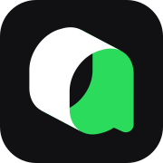

Backend & data
I use these to build APIs, protect data access, and turn messy inputs into dependable product behavior.
 Python
Python FastAPI
FastAPI PostgreSQL
PostgreSQL SQLAlchemy
SQLAlchemy Pydantic
Pydantic SnowflakeAWSAWS
SnowflakeAWSAWS Docker
Docker Airflow
AirflowI choose tools based on the problem in front of me: a dependable data path, a native product experience, or a faster way to explore an idea without losing judgment.
Tools are part of the workflow, not the identity. I use them to make decisions clearer, feedback faster, and the finished product more useful.
I use these to build APIs, protect data access, and turn messy inputs into dependable product behavior.
PythonFastAPIPostgreSQLSQLAlchemyPydanticSnowflakeAWSAWSDockerAirflowI use these to shape native interfaces, keep state understandable, and ship product work that feels considered.
 SwiftUIUIKitSwiftUIMVMVVMTPTestability
SwiftUIUIKitSwiftUIMVMVVMTPTestability Xcode
Xcode TestFlightApp Store ConnectSwift Package Manager
TestFlightApp Store ConnectSwift Package ManagerI use AI to explore, question, and accelerate implementation while people own context, boundaries, and the final product.

Qoder